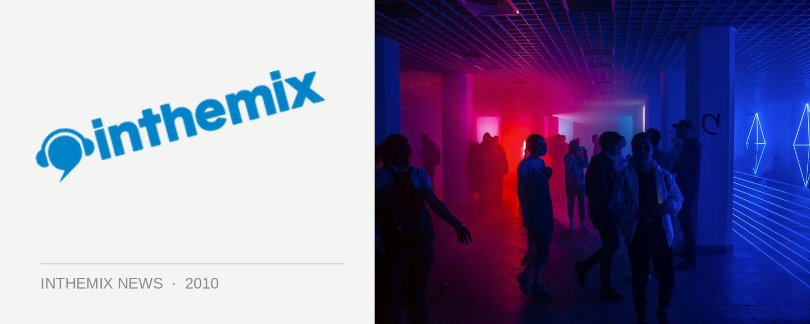

Mowgli bounces down for January tour
With all the New Years party action already fading into a distant memory, to console you there’s at least a few quality tours coming up through January to keep you rolling until some of the festivals kick off again. Among them are Ben Watt and Dixon who were announced late last year, but there’s also Italian producer Mowgli who’ll be bouncing down in the middle of the month for a club tour. He’ll be coming fresh from the success of his track London to Paris, which has been getting props from the likes of Cassius, Popof, Style of Eye, Brodinski, Axwell, DJ Medhi and more.
London to Paris is taken off Mowgli’s EP from late last year Nu Skool, which earned the Italian even more accolades from right across the fidget and electro community, and it comes at the end of a strong 2009 that saw him turning heads with his remix of Chemical Brothers’ Do It Again, as well as churning out the rerubs of artists like Simian Mobile Disco, Tricky, X-press-2 and more. Last here for the 2008 edition of Stereosonic, catch him doing his thing in the clubs.
Mowgli tour dates:
Friday 15th Jan – Monastery, Brisbane
Saturday 16th Jan – Chinese Laundry, Sydney
Friday 22nd Jan – Pang, Canberra
Monday 25th Jan – Melbourne (Venue TBC)
Friday 29th Jan – Ambar, Perth
Saturday 30th Jan – The Espy, Melbourne